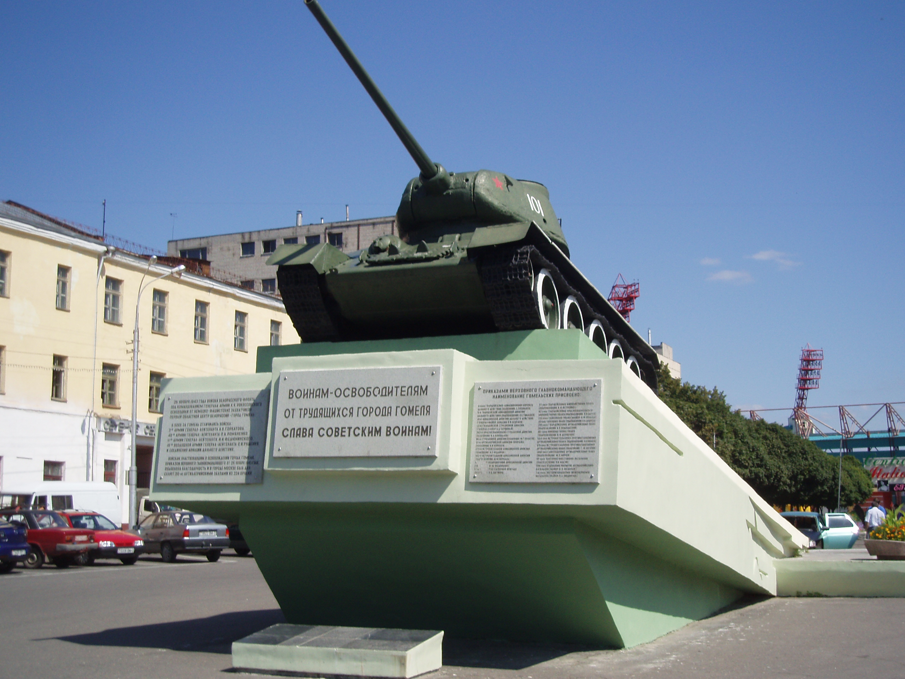
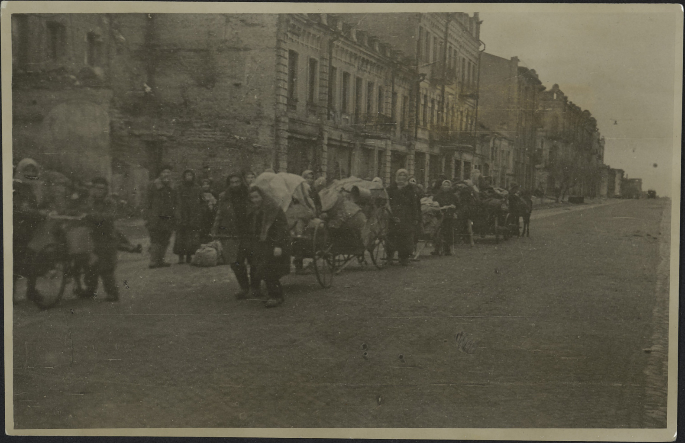

После победы на Курской дуге перед Советским фронтом была поставлена стратегическая задача - освободить Левобережную Украину, форсировать Днепр и овладеть Киевом. Важнейшую роль в выполнении этой задачи играли успешные действия на Черниговском направлении. В то же время немецкое командование сосредоточило мощные силы возле Киева, организовав так называемый Восточный вал - укреплённую оборону, препятствующую продвижению советских войск. В сентябре 1943 года советские подразделения успешно форсировали реки Десну и Сож, освободили населённый пункт Комарин и заняли районы Добруш и Новобелицкий вблизи Гомеля. Однако дальнейшее наступление оказалось затруднённым из-за неудержимой обороны немецких войск вокруг самого Гомеля и сильной группировки, сосредоточенной в междуречье Сожа и Днепра. Учитывая эти обстоятельства, командование Белорусского фронта приняло решение провести скрытную переброску частей к городу Лоев, форсировать Днепр и наступать в направлении Речицы. Это позволило обойти Гомельскую группировку противника с юга, поставив её под угрозу окружения и существенно ослабив оборонительные позиции немцев в регионе. Такой манёвр сыграл важную роль в дальнейшем развитии наступательной операции, открывая путь к освобождению территорий Украины и Беларуси.

В ходе событий Великой Отечественной войны командующий 65-й армией генерал Павел Иванович Батов принял стратегическое решение о прорезании обороны противника на линии Липняки - Ястребка и развитии наступательных действий в направлении на Осиновку. Для этого были сосредоточены силы 18-го, 19-го и 27-го стрелковых корпусов, а также 1-го гвардейского Донского и 9-го танковых корпусов, а также 2-го и 7-го гвардейских кавалерийских корпусов. Одновременно 42-й стрелковый корпус 48-й армии получил задачу прорвать оборону врага в районе реки Днепр возле населённых пунктов Холмеч и Прокисель. Наступление началось 10 ноября 1943 года в районе Лоева. 11 ноября к наступлению подключились танковый и кавалерийский корпуса для усиления удара. Советские войска вели тяжелые бои за расширение плацдарма на правом берегу Днепра, и к 13 ноября были освобождены населённые пункты Холмеч, Дворец, Краснополье и Артуки. В ночь на 15 ноября соединения 19-го стрелкового корпуса освободили Демехи, что позволило отрезать противнику железнодорожные и шоссейные пути сообщения между Гомелем и Калинковичами. 16 ноября советские войска взяли города и станции Ребуса и Бабичи. На этом этапе 15-я и 16-я гвардейские танковые бригады, входящие в состав 1-го гвардейского Донского танкового корпуса, а также 37-я гвардейская и 162-я Среднеазиатская Новгород-Северская стрелковые дивизии 19-го стрелкового корпуса получили задание внезапным ударом с северо-запада овладеть городом Речицей. К вечеру 16 ноября подразделения заняли Озерщину и вступили в бои на окраинах города. В это же время с юго-востока на город наступал 42-й стрелковый корпус Красной армии. Ключевым моментом стало освобождение железнодорожного вокзала города. Старшина 3-го батальона 954-го стрелкового полка Алексей Морозов 18 ноября вывесил на здании Речицкого педагогического училища красный флаг. В последующие двое суток немцы пытались вернуть контроль над станцией, но бойцы 2-го стрелкового батальона полка удержали её, благодаря чему железнодорожное сообщение было сохранено. Немецкие войска отступили на юго-восточную окраину города, надеясь закрепиться в промышленной зоне и удержать железнодорожный мост через Днепр, связывавший их с группировкой в Гомеле. Однако бойцы 2-го стрелкового батальона успешно отразили контратаки немцев, а уже 21 ноября смогли захватить мост. В ночь на 18 ноября 1943 года войска 65-й армии Батаева перерезали железнодорожную ветку Калинковичи - Гомель. Это создало дополнительные трудности для врага, и две стрелковые дивизии с двумя танковыми бригадами направились в тыл противника, вызывая его поспешное отступление из Речицы. Последний очаг сопротивления в районе железнодорожного вокзала был быстро подавлен, и к 14 часам 18 ноября город был полностью освобождён. За героизм и успешное выполнение боевых задач войска, участвовавшие в освобождении Речицы, получили благодарность Верховного Главнокомандования, а в Москве в тот же день был дан салют из 12 артиллерийских залпов (124 орудия) - первая подобная церемония в честь освобождения белорусских городов во время Великой Отечественной войны. Развивая наступление, 48-я армия прорвала оборону противника при впадении реки Березина в Днепр и закрепилась на южном плацдарме в районе Жлобина. Вслед за ней войска 61-й армии, под командованием генерала Белова, приближались к Мозырю. Оборона врага была прорвана по всему фронту, на протяжении 120 километров, что вынудило немцев начать отступление. Ночью с 18 на 19 ноября германские войска, применяя 20 танков типа Т-IV, Т-V («пантеры») и Т-VI («тигры»), вместе с 192-й пехотной дивизией, ворвались в село Короватичи. Немцы достигли центра села и вступили в бой с 41-й артиллерийской бригадой, однако были остановлены мощным огнем противотанковой артиллерии и стрелковых подразделений. В течение двух суток в Короватичах происходили интенсивные боевые столкновения, переросшие в рукопашную схватку. Обе стороны понесли крупные потери, однако наступление врага было отбито. К 21 ноября гомельские войска освободили город Горваль, вышли в тыл группировки немецких войск, оборонявшихся в Гомеле. В последующие дни войска 11-й и 63-й армий прорвали немецкую оборону в районе Костюковки, вышли к железной дороге Гомель - Жлобин и шоссе Гомель - Могилёв. В то же время части 50-й и 3-й армий начали наступление севернее Жлобина, освободили Пропойск (ныне - Славгород), Корму, Журавичи, и к 25 ноября подошли к Днепру в районе Нового Быхова, охватив Гомель с севера. К вечеру 25 ноября войска Белорусского фронта подошли к Гомелю с трёх сторон. Угроза окружения заставила немцев уже в ночь на 26 ноября начать отвод своих войск из междуречья Сожа и Днепра. Попытка немцев соединиться с остатками речицкой группировки в районе Речицы была предотвращена войсками 48-й армии. Рано утром 26 ноября части 217-й и 96-й стрелковых дивизий (под командованием полковников Н. Масонова и Ф. Булатова соответственно) вошли в Гомель, а также части 7-й и 102-й стрелковых дивизий (полковники Д. Воробьёв и генерал-майор А. М. Андреев) начали вход в город с юго-востока. В тот же день военные установили знаки освобождения на важных объектах: ефрейтор Михаил Васильев поднял красный флаг на здании городской электростанции, а лейтенант Григорий Кирилюк - на пожарной каланче. К завершению ноября советские войска достигли рубежей Потаповка - Гамза - Прудок, Чаусы, западнее Петуховки, южнее Нового Быхова и района Рогачёва, что создало условия для полного освобождения региона. В результате Указа Верховного Главнокомандования и последующих торжественных церемоний в Москве была объявлена благодарность 20-ю артиллерийскими залпами из 224 орудий в честь освободительных боёв и достижения стратегических целей. Главную роль в успехе сыграли партизаны Беларуси, активно поддерживавшие наступательные действия, нанося удары по отступающим эшелонам противника, разрушая железнодорожные пути и ведя разведку. В знак признания героизма и высокой боевой стойкости 23 воинских соединения и части получили почётные наименования «Гомельские», а 22 - «Речицкие».

В результате Гомельско-Речицкой операции войска Белорусского фронта продвинулись на 130 км, создав угрозу окружения южного фланга группы армий «Центр» и нарушив связь этой группы с группой армий «Юг». В ходе операции был освобождён крупный областной центр - город Гомель, а также захвачены обширные территории Беларуси. Эти успехи значительно способствовали продвижению 1-го Украинского фронта на киевском направлении. Столкнувшись с мощным сопротивлением войск Белорусского фронта, противник не смог перебросить на киевское направление ни одной дивизии. В результате после трёх неудачных попыток 1-го Украинского фронта освободить Киев с юга, он был полностью освобождён 6 ноября 1943 года ударом с северного плацдарма. Далее 12 ноября 1943 года 1-й Украинский фронт освободил Житомир, однако этот град был позднее потерян из-за контрнаступления противника. После этого К. К. Рокоссовский, выступая в роли представителя Ставки Верховного Главнокомандования, отправился к Н. Ф. Ватутину в штаб 1-го Украинского фронта. Тем временем войска Белорусского фронта вели бои местного значения, укрепляя свои позиции и готовясь к будущему переправлению через Днепр.